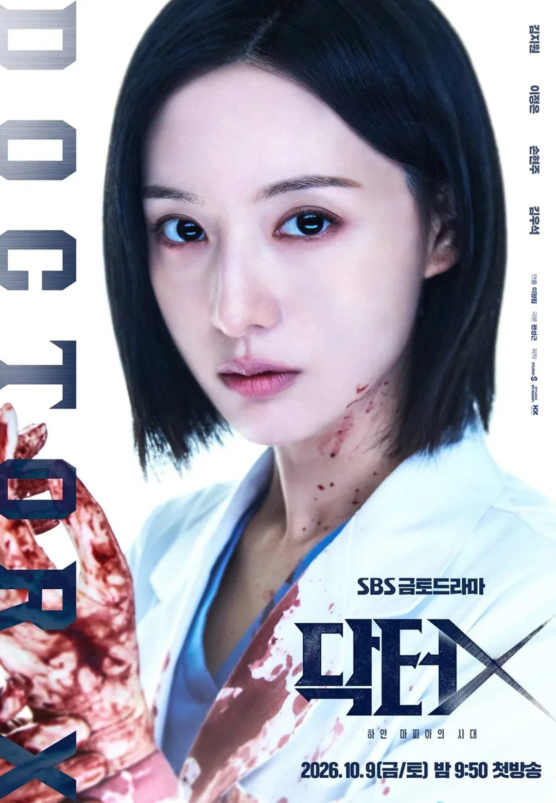
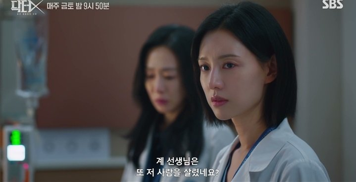
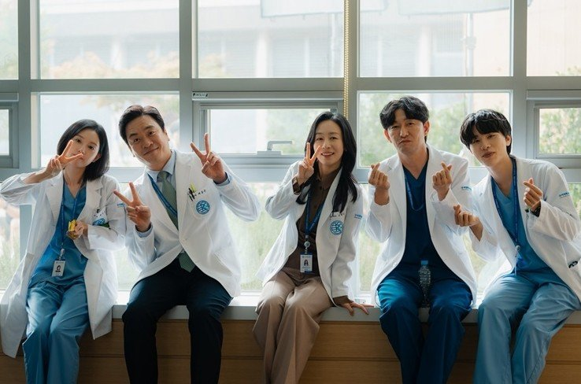
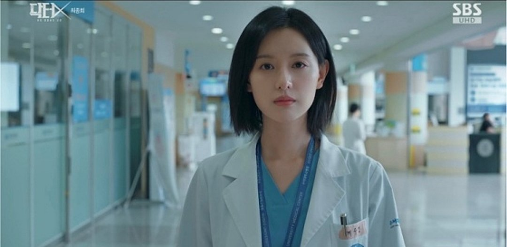
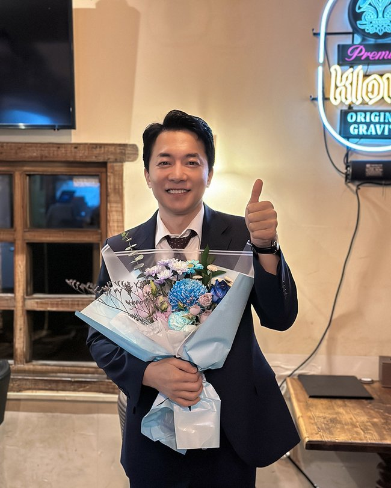
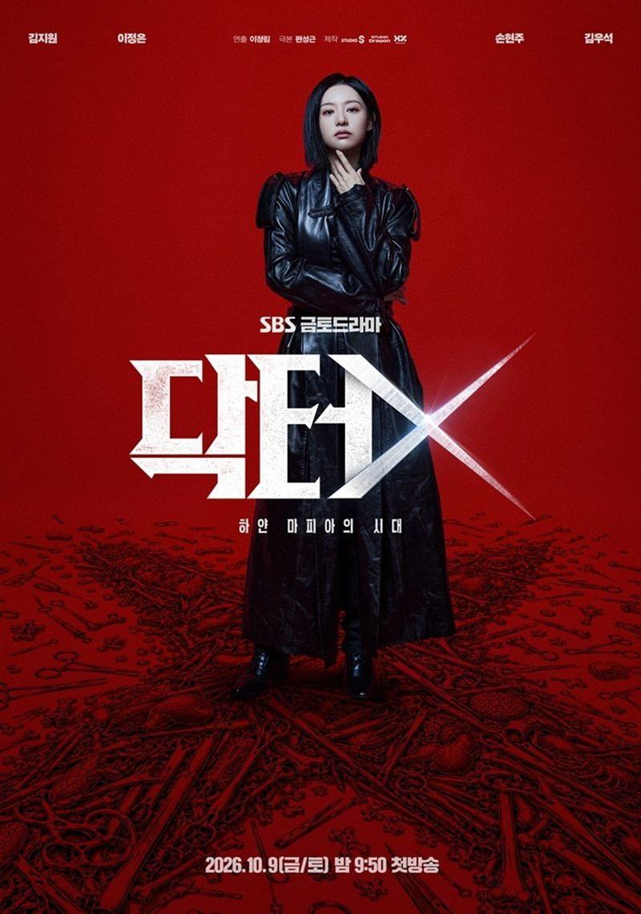

복수할 기회가 수술대 위에 놓였는데, 계수정은 끝내 손을 대지 않았어요. 11월 14일 막을 내린 SBS 금토드라마 '닥터X : 하얀 마피아의 시대' 마지막 회 이야기예요. 닥터X 결말이 어떻게 흘러갔는지, 인물들은 각자 어디로 갔는지, 시청률은 어땠는지 정리했어요.
📷 사진 1 자리
▲ SBS 금토드라마 '닥터X : 하얀 마피아의 시대' 공식 포스터 · 사진=SBS 제공
수술대 위의 마지막 선택
마지막 회에서 계수정(김지원)은 아이들을 희생시킨 김승효(전국환)의 심장 이식 수술을 맡아요. 복수와 의사로서의 사명 사이에서 마지막 선택을 해야 하는 자리였죠.
📷 사진 2 자리
▲ '닥터X' 수술 장면 스틸 · 사진=SBS ‘닥터X : 하얀 마피아의 시대’ 제공
마음을 돌린 건 장희숙(이정은)이었어요. 장희숙이 니마를 데리고 오면서 진심이 전해졌고, 계수정은 계획했던 행동을 실행하지 않았어요. 조원진(이진희)과 함께 수술을 끝까지 마쳐 김승효를 살렸어요.
📷 사진 3 자리
▲ '닥터X' 스틸 · 사진=SBS ‘닥터X : 하얀 마피아의 시대’ 제공
▶ 영상 1 자리
'신을 믿어요?'라는 대사의 의미
반전은 그다음이에요. 두 사람은 진정제의 효과를 없애 환자를 깨우는 약 '플루마제닐'을 쓰지 않고 그대로 반납했는데, 김승효에게 수술 중 각성이 일어났어요.
그러자 조원진이 "신을 믿어요?"라고 물었어요. 계수정이 의사의 책임을 저버리지 않도록 신이 대신 끼어든 것 같다는 말이었죠. 계수정은 직접 해를 가하지 않았지만, 김승효는 결국 자기 죗값을 마주하게 됐어요. 복수와 신념 중 하나를 고르게 하는 대신 둘 다 지키게 만든 결말이에요.
인물들은 어디로 갔나
박태경(김우석)은 김성진(허준석)이 있는 응급의학과를 선택하며 새 출발을 했어요.
📷 사진 4 자리
▲ '닥터X' 출연진 스틸 · 사진=SBS 제공
부승권(손현주)은 계수정에게 정식으로 함께하자고 제안했지만, 계수정은 악수 대신 가볍게 목례만 하고 혼자 걸어 나갔어요. 이를 본 장희숙의 "그래, 이게 너지. 가라, 계수정"이라는 말과 함께, 앞을 향해 걸어가는 계수정의 뒷모습이 마지막 장면이었어요.
📷 사진 5 자리
▲ '닥터X' 계수정 스틸 · 사진=SBS 제공
도윤식을 연기한 김영민은 종영 다음 날 소속사를 통해 도윤식을 떠나보내고 싶지 않다는 소감을 전했어요.
📷 사진 6 자리
▲ '닥터X' 종영 소감을 전한 배우 김영민 · 사진=에이스팩토리 제공
최종회 시청률과 남긴 기록
닐슨코리아 기준 최종회 시청률은 전국 15.2%, 수도권 14.5%, 순간 최고 17.3%였어요. 같은 시간대는 물론 그 주에 방송된 전 채널 프로그램 가운데 가장 높았어요.
▶ 영상 2 자리
'닥터X'는 첫 회부터 마지막 회까지 전 채널 미니시리즈 시청률 1위를 한 번도 내주지 않았어요. 2049 시청률도 평균 5.3%, 최고 6.51%로 전 채널 1위였어요.
어떤 드라마였나, 다시 볼 만한 이유
'닥터X'는 실패도 타협도 모르는 수술 실력으로 병원의 부조리를 깨부수는 외과의사 계수정의 이야기예요. 12부작으로, 김지원, 이정은, 손현주, 김영민, 이진희, 김우석 등이 출연했어요.
📷 사진 7 자리
▲ '닥터X : 하얀 마피아의 시대' 포스터 · 사진=SBS 제공
볼거리는 매회 수술 장면에 걸린 선택이에요. 마지막 회도 결국 '살릴 것인가'라는 같은 질문으로 돌아와 끝났어요.
📷 사진 8 자리
▲ '닥터X' 스틸 · 사진=SBS 제공
메디컬 드라마를 좋아하지만 연애보다 사건 중심 이야기를 원하는 분, 몰아보기할 12부작을 찾는 분께 맞아요.
▶ 영상 3 자리
결말을 정리하면서 가장 눈에 띈 건, 마지막 회가 '복수했나'보다 '어떻게 의사로 남았나'에 무게를 실었다는 점이에요. 수술 중 각성이라는 장치 덕분에 계수정은 손을 더럽히지 않고도 이야기가 마무리됐고, 부승권의 손을 잡지 않고 떠나는 엔딩까지 첫 회의 계수정과 그대로 이어져요. 시청률이 마지막에 오른 것도 그 선택을 끝까지 보고 싶었던 사람이 많았다는 뜻으로 읽혀요.
'닥터X' 결말은 계수정이 복수 대신 의사의 신념을 지키고 홀로 떠나는 장면이었고, 최종회는 전국 15.2%로 끝났어요.





